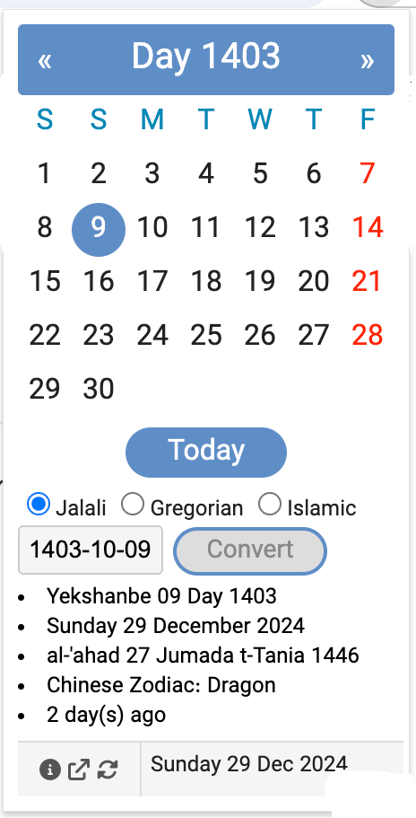
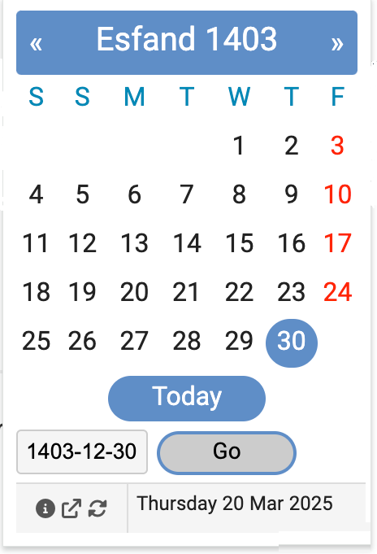
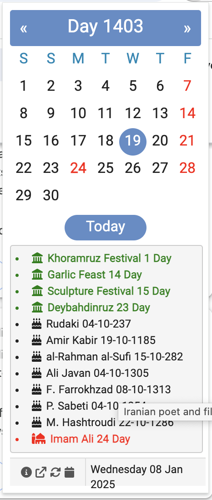

Introduction
A simple JavaScript-based Chrome/Edge extension that provides a Jalali (Persian) Calendar with conversion capabilities, rendering specific dates and listing events such as holidays, iranian historic figures and ancient persian festivals.
Version: 3.81
Last update: 16-01-2025
Features
- Month View: Shows current Jalali month
- Navigation: Easy navigation between months with next/previous buttons
-
Multi-Calendar Conversion: Convert dates between:
- Jalali (Persian) Calendar
- Gregorian Calendar
- Islamic Calendar
-
Additional Information:
- Chinese zodiac for the selected years
- Days difference calculation for past/future dates
- Localization: Available in English, French, German, Italian, Norwegian, Persian, Russian, Spanish, Swedish, Arabic and Turkish, which could be configured in the Options.
- Date Range: Supports Jalali years from 1200 to 1500
Usage
- Use left/right top buttons to navigate between months
- Click "Today" to return to current date
- Hover over dates to see Gregorian equivalents
Calendar Conversion
Select any date in one calendar system to see its equivalent in:
- Jalali Calendar
- Gregorian Calendar
- Islamic Calendar
Installation
- Install for Chrome or Edge from Chrome Web Store
History
First released in October 2006, this extension has been helping users with Persian calendar needs for over 18 years.
Media

|
| Calendar month view |
|  |
| Convert date |
|  |
| Go to date |
|  |
| Events |